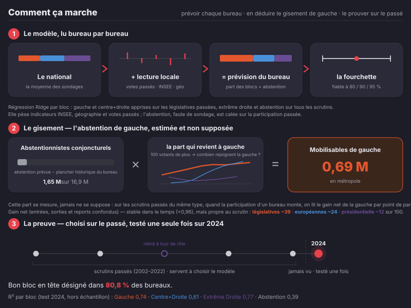

La précision suit la marge
Le bon appel n'est pas du hasard : il est quasi certain quand l'écart est net, plus dur quand les blocs se tiennent — exactement le terrain du combat plus bas.
Pas un sondage déguisé le sondage vs nous
Un sondage national n'a qu'un favori, le même bloc partout — alors que la réalité, lue bureau par bureau, est partagée. Ce favori unique se trompe une fois sur deux ; notre carte lit chaque bureau et appelle le bon bloc quatre fois sur cinq.
La prédiction d'un bureau est une moyenne nationale plus un écart local ; voici ce que chaque source pèse dans sa marge d'erreur — l'essentiel est notre lecture du terrain, qu'aucun sondage ne porte.
notre lecture locale national (sondages)
1999–2026 · validation 2024 Législatives T1, une seule passe, jamais ré-ajustée. Aucune optimisation sur les données de test.
Combien d'électeurs, et où
Un bureau n'est ni un siège ni un électeur. Ce qui se gagne, ce sont des électeurs : les abstentionnistes qui penchent à gauche. C'est ce gisement que la carte colore par défaut — pâle là où il est rare, saturé là où il se concentre.
Le total national d'un gain est arithmétique ; ce que le modèle seul apporte, c'est où sont ces électeurs. Leur orientation est modélisée par γ, la part de gauche du votant marginal — lue sur les vraies hausses de participation, pas sur le partage des exprimés (circulaire). Nous avons retenu la seule règle qui tient d'une élection à l'autre : une carte fondée sur la seule sociologie décrirait finement le dernier scrutin mais prédirait mal le suivant — testé, écarté.
Où déployer communes par abstentionnistes mobilisables · métropole
Les électeurs gagnables ne sont pas dispersés : ils se concentrent dans des villes nommables. Chaque barre compte les abstentionnistes qui, à profil de bureau donné, penchent à gauche. Outre-mer et étranger exclus — non démarchables.
Et si… ?
Tournez le cadran national : chaque bureau répond, parce que la prédiction est une moyenne nationale plus un écart local stable. Le compteur est exact sur les 69 358 bureaux, et l'agrégat remonte aux 577 circonscriptions.
Courbe de bascule un cadran, deux unités
Le rapport de force circonscriptions, premier tour, agrégat des bureaux
Les circonscriptions sur le fil les plus serrées · premier tour, agrégat des bureaux
Le compteur dit combien de circonscriptions changent de bloc dominant ; voici lesquelles — celles dont la marge est la plus mince sous le scénario courant. Tournez le cadran : la liste se réordonne, et celles qui viennent de basculer s'allument.
Notre honnêteté là où l'on est le moins sûr · la garantie tenue
Les territoires particuliers (Outre-mer, Corse, étranger) concentrent l'erreur et reçoivent des intervalles plus larges. Nous l'assumons plutôt que de le cacher. R² — Gauche 0,74 · Centre+Droite 0,61 · Extrême Droite 0,80 · Abstention 0,74.
Quand on annonce une bande à 80, 90 ou 95 %, le réel y tombe au moins aussi souvent que promis — intervalles conformes à garantie de couverture, stratifiés par territoire, mesurés sur 2024 et jamais ajustés.
Comment ça marche
